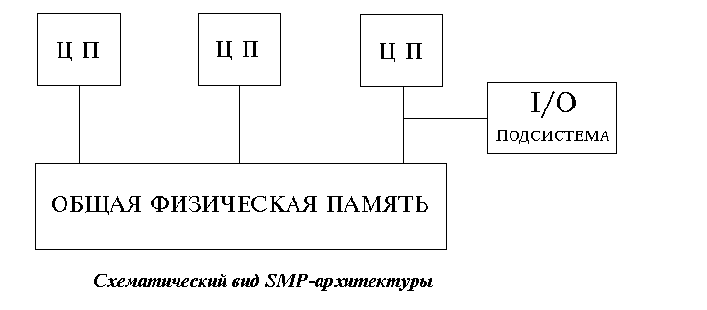

SMP архитектура
SMP архитектура (symmetric multiprocessing) - cимметричная многопроцессорная архитектура.
Главной особенностью систем с архитектурой SMP является наличие общей физической памяти, разделяемой всеми процессорами

Память является способом передачи сообщений между процессорами, при этом все вычислительные устройства при обращении к ней
имеют равные права и одну и ту же адресацию для всех ячеек памяти. Поэтому SMP архитектура называется симметричной. Последнее
обстоятельство позволяет очень эффективно обмениваться данными с другими вычислительными устройствами.
SMP-система строится на основе высоко скоростной системной шины (SGI PowerPath, Sun Gigaplane, DEC TurboLaser), к слотам которой
подключаются функциональные блоки трех типов: процессоры (ЦП), операционная система (ОП) и подсистема ввода/вывода (I/O).
Для подсоединения к модулям I/O используются уже более медленные шины (PCI, VME64). Наиболее известными SMP-системами являются
машины серий SGI Power Chalenge, DEC Alpha Server, Cray T3D. Вся система работает под управлением единой ОС (обычно UNIX-подобной, но для Intel-платформ поддерживается Windows NT). ОС автоматически
(в процессе работы) распределяет процессы по процессорам, но иногда возможна и явная привязка.
Основные преимущества SMP-систем:
- простота и универсальность для программирования. Архитектура SMP не накладывает ограничений на
модель программирования, используемую при создании приложения: обычно используется модель параллельных ветвей, когда
все процессоры работают абсолютно независимо друг от друга, - однако, можно реализовать и модели, использующие
межпроцессорный обмен. Использование общей памяти увеличивает скорость такого обмена, пользователь также имеет доступ
сразу ко всему объему памяти. Для SMP-систем существуют сравнительно эффективные средства автоматического
распараллеливания.
- легкость в эксплуатации. Как правило, SMP-системы используют систему охлаждения, основанную на воздушном
кондиционировании, что облегчает их техническое обслуживание.
- относительно невысокая цена.
Недостатки:
- системы с общей памятью, построенные на системной шине, плохо масштабируемы
Этот важный недостаток SMP-системы, не позволяет считать их по-настоящему перспективными. Причины плохой масштабируемости состоят в том,
что в данный момент шина способна обрабатывать только одну транзакцию, вследствие чего возникают проблемы разрешения конфликтов при
одновременном обращении нескольких процессоров к одним и тем же областям общей физической памяти. Вычислительные элементы начинают
друг другу мешать. Когда произойдет такой конфликт, зависит от скорости связи и от количества вычислительных элементов. В настоящее время
конфликты могут происходить при наличии 8-24-х процессоров. Кроме того, системная шина имеет ограниченную (хоть и высокую) пропускную способность (ПС) и ограниченное число слотов.
Все это с очевидностью препятствует увеличению производительности при увеличении числа процессоров и числа подключаемых пользователей.
В реальных системах можно использовать не более 32 процессоров. Рекорд в этом отношении принадлежит фирме SUN. Произведенный ею
суперкомпьютер
SUN Enterprise (Sun Fire) 15000 может иметь до 72 UltraSparc III 900 МГц процессоров SMP архитектуры.
Наиболее известным суперкомпьютерным серверами SMP-архитектуры являются также ORIGIN серии
3000, и системы V класса компании Hewlett Packard.
Максимальная производительность SMP системы может составлять приблизительно 50 миллиардов операций в секунду.
Для большинства современных приложений это приемлемо, но не для всех.При работе с SMP системами используют так называемую
парадигму программирования с разделяемой памятью (shared memory paradigm).


 [Назад]
[Оглавление]
[Вперед]
[Назад]
[Оглавление]
[Вперед]
Последнее обновление 8.02.2002 WebMaster